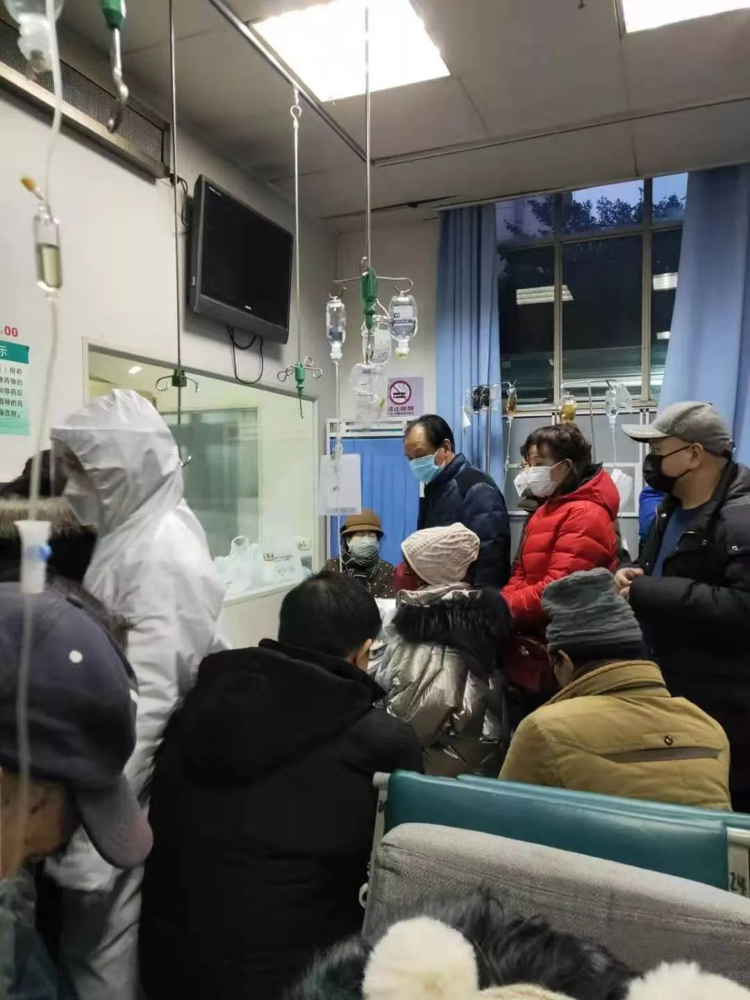
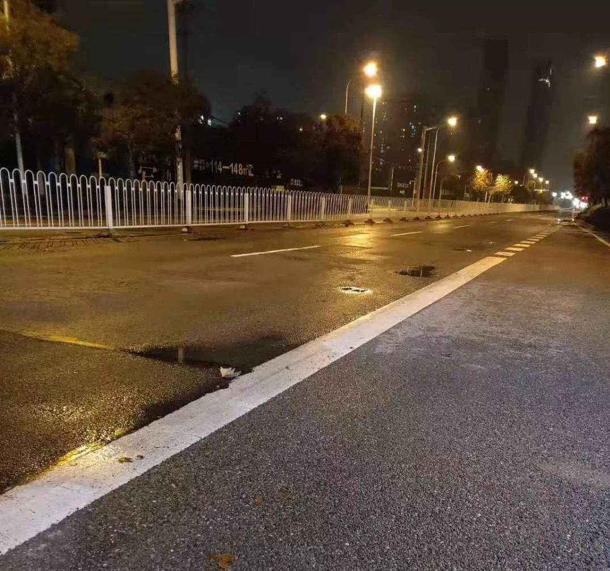
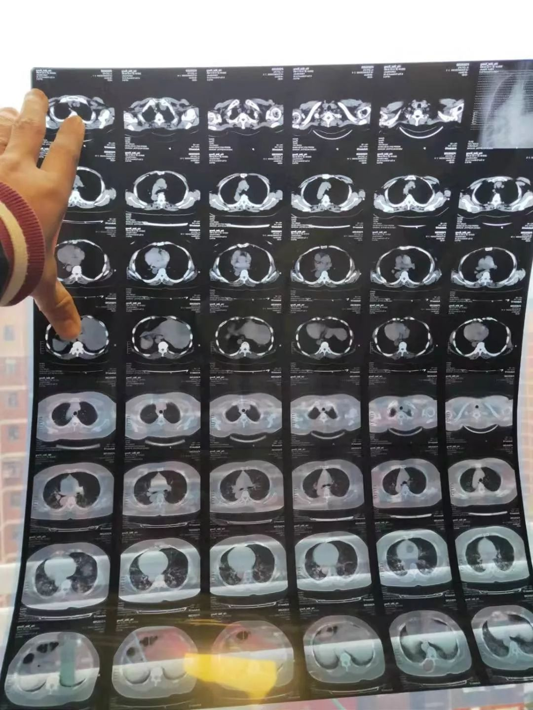

武汉病人：以家庭为单位的患者越来越多，去殡仪馆也得排队
原文链接 备份链接 杨晨还在等通知。他在等待“十号令”带给他以及他的家庭命运的转机，他是一位“武汉病人”的家属。 让他有所期许的“十号令”，是2月2日发出的。按照“十号令”的要求，自通告发布之日起，对全市经发热门诊诊断有肺炎症状的发热病人 …

看到“7例肺炎”的新闻后，小熊赶回了武汉。但妈妈还是病倒了。目前居家隔离的妈妈病情有所好转，可小熊还是一刻不敢放松。
文 | 吴美芬
1月1日，家住武汉的小熊在贵阳出差。这天他第一次听说了“新型肺炎”，新闻里说武汉有7个人患上了这个病，有人传闻是“非典”。
1月7日，他担心父母，跟公司申请提前回到武汉。两周后，母亲病发急需抢救。在医院，他亲历了新型冠状病毒肺炎“人传人”的消息公布之初，医院的真实状况。
2月4日，我联系上他，听他讲述为母亲求医的过程。张母至今未确诊，居家隔离治疗，病情有所好转。
以下是小熊的自述：
“非典”？
1月1日，我在贵阳看到一条新闻，说武汉华南海鲜市场有7个人患上了新型肺炎。接着就有传闻说是“非典”，后来又出了辟谣新闻，说那些患者已经被隔离了，大家很安全。
我担心父母，连年会都没参加，跟公司申请提前了6天回来。我是12日中午在贵阳北站坐的车，下午回到了武汉。
隔天，我们正在吃晚饭，妈妈突然不舒服，说前几天一直发烧咳嗽，疲惫乏力，不想吃饭。当时我没感觉到问题的严重性。一是因为回到武汉没看到大家戴口罩，二是我们家住在汉口，离华南海鲜市场比较远，也没去过那边。
1月14日，妈妈自己去第一医院做检查，医生诊断是支气管炎，开了3天针。三天针打完后病情没有好转，发热更严重了， 38度往上。
我感觉情况不对，1月17日又让她去第一医院拍了CT，还做了血检。这次医生诊断为肺炎，说是从支气管炎发展的。医生又给她开了一天针，打完还是没效果，体温一直在38.6度左右。
医生建议住院，让我们去住院部问一下有没床位。我先到13楼，护士说有40多个人在排队。我又去14楼，护士说登记一下，有100多人在排队，等有人出院，才能住进去。
我看到这个状况，意识到问题严峻，骑着电动车跑遍了三医院、四医院、武昌军区总医院，都说床位满了，要排队。
1月23日，我爸陪妈妈去协和医院，做了CT和血检，医生基本确定是新型冠状病毒感染。
当天，新型冠状病毒肺炎“人传人”的消息已经公布，全市医院呼吸科住满了人，还有很多人在排队。我妈妈那时咳嗽已经很严重，没有床位住不了院，只好回家。
人满为患的医院
1月23号下午，妈妈突然呼吸困难、喘不过气。那天武汉开始封城，公交、地铁都停运，出租车也打不到。我同时用爸爸、妈妈还有我的手机拨打了120，大概7分钟后电话接通。
对方问我，联系好医院没？我说没有，他们说没联系好没法来接。我不断地恳求，说了很多好话，他们才答应来。救护车从汉阳出发20分钟左右到我家。
车上一共有4个护士，两男两女，没有医生。
去医院的路上，救护车的车窗一直开着，冬天风很大，很冷，我妈妈一直在咳嗽。我问护士，能不能给我妈妈吸氧，他们不愿意给，原因是妈妈一直在咳嗽，他们怕飞沫传播造成感染。我就让他们帮忙把车窗关上了。
有一个护士给了我几个电话投诉卫生部门，我打了2、3个，这些部门都推来推去，没说谁负责。
救护车只好先把我们送到古田三路的普爱医院西院区，去到那发现医院的门被封闭了，门诊、急诊的门都上了锁，说是在改造。
下午5点左右，救护车带着我们去到协和医院，此时，协和医院正好在转移一批新型冠状病毒感染的病人，楼下很多救护车，护士让我们赶快走，说急诊科没有医生了。
最后去了红十字会医院，一进去，大厅塞满了人，左边的发热门诊跟右边的急诊都塞满了，只留下一条很小的道，像集市或者过节的步行街，人挤人，有人走过大家都要让一下的那种。
缴费和打针的人很多，排队很长，可以说是绕了篮球场一圈。病人坐在板凳上，大多数是中老年人。

红十字医院门诊
我们转了一圈，才在电梯旁找到一个位置给妈妈坐下来。
爸爸挂完号后，只有两个医生看病，我和我爸分别排队，我排的这个医生本来是6点下班的，一直到7点都还没走，后来他实在看不动了，就说后面的人不用排了，又排了6个人才轮到我们，这时他都还没下班。
排在我们前面的那个病人属于轻症病人，他想打针但医生建议他回家隔离吃药，避免交叉传染。我妈妈属于重症，开了针。
我们是6点左右挂完号，一直到第二天早上7点多才打上针，排了十几个小时队，都没有人来过大厅消毒，只有两台空气净化器在运转，一边一个。
我一晚上都坐着，没合过眼，人太多，很吵，我感到特别无助。其他的病人和家属也一样。
我看到有的家属因为插队打了起来，有的病人对着护士吼：“我已经排了24个小时了，还没打上针”，还有人排着队突然就晕倒了。很多人在跟护士抱怨。我很同情她，因为她也在打电话求助。
印象最深刻的是，我亲眼看到一个新型冠状病毒感染的病人去世。我记得是1月24日凌晨，我排队坐得腰酸背疼，起来走动了一下。
走到一个诊疗室门口，里面没有医生，队伍很长。问别人，他们说医生去抢救了。
我就往抢救室走，到了门口，我看到有个患者躺在抢救室门外地板的担架上，一个医生和两个护士正在做胸部按压抢救，另外有一个护士急匆匆跑进药房又拿着点滴包跑过来。还有个人拉住她问了个问题，她很急地回了句“现在没时间回答”。
当时，抢救室门外，有很多在输液的患者和排队的家属。医生特别用力地往下压，可是那个病人一点反应都没有，医生一直按一直按，最后还是抢救无效。
一线医护人员真的很值得尊敬，他们冒着生命危险去拯救武汉的患者，我能感受到他们的真心。
因为没有试剂检测确诊，不能住院，打完针我们就回家了。
艰难的求医之路
我们开始做隔离措施，妈妈睡主卧，爸爸睡客厅，我睡次窝，并且互相说好，没什么事都不要出房间门。
1月25日早上，妈妈说自己没发热，只是行动时还是会喘气、费力，进食也好了点，精神看上去比之前好很多。
但过了两天，我妈还是觉得呼吸困难，想去医院看看。这时国家政策规定患者去医院要经过社区。我打电话给社区登记了情况。两个小时后他们回电话，让我去卫生所看一下。
我去到门口，看到有辆救护车接走了一个病人。卫生所里面不用挂号，轮两三个就到我了，可医生说这看不了，建议我去泰康医院或者汉口医院。
但卫生所没车，去不了。反复联系社区后，说可以让我妈妈跟其他人一起坐一辆车去，但不会把家属送回来，我就让爸爸跟着去，想着晚些时候可以开电瓶车去把爸爸接回来。
他们去的是浦爱西院，到了之后，爸爸给我打电话说，医院不给37.3度以下的人看病，我妈妈当时的体温是37度，没有发热，医院不肯给她看。
没办法，我就骑着电动车去把妈妈接回来。那时是晚上7点多，去的路上，马路空荡荡，我完全可以在快车道上骑行。
半路遇到一个老爷爷用轮椅推着一个老奶奶，走在通往医院的路上。
冬天晚上好冷，没有人会在这个时候出来，我想他们是去看病，没有车只能走路去。我妈还有我在身边，他们只能是两个老人相依为命，看着很心酸，很可怜。

空无一人的街道
禁止交通，对于子女不在身边又不会开车的老年人来说，太残酷了。之前，我爸妈去医院叫出租车，司机都不肯接，说上面有规定，不接送咳嗽病人。这简直是把人往死里逼，就好像是在说：你只能是靠自己，你能活下来就能活，活不下来，我也没有办法。
回来时，我给爸爸扫了一辆共享单车，6公里的路，我骑了半个小时，我爸骑了40分钟。天特别冷，我冻得鼻涕直流，把口罩的上半部分都浸湿了，还拿纸巾擦了鼻涕。妈妈坐在后面，我都无法想象她冻得有多难受，好担心她冻发烧。
1月27日后，妈妈再没去过医院。她在家吃一种名叫阿斯美的药，医院医生开的，说是治咳嗽和哮喘。吃完后，我自己又去社区卫生院开了两瓶，45元一瓶，共90元。她也没再发热，状态有所好转。
除了偶尔出去买菜，我都不出门。
我是一个武汉市公民，也想为武汉控制疫情做点事情。直到现在，我妈都没得到试剂做核酸确诊，只是医生口头说是新型冠状病毒感染。
虽然不发热了，但只要有一天我妈妈没确诊，没痊愈，我一天都不能放松，都会提心吊胆。就像随时准备上战场的人，我很怕她突然哪天又发烧或呼吸困难。
现在求医的流程太漫长，如果妈妈突然发热，我只能骑电动车带她去医院。但如果是需要抢救的情况，我怎么办？现在120、110都需要排队。等走完这些流程，救护车来的那一刻，病人也许去世了。

小熊妈妈的检查结果
未来会怎样？
我也想过，如果某一天被自己感染了，怎么办？我的家人谁来照顾。我一直在跟自己说，不能倒下。每时每刻我都很注意，减少感染的概率，没有医用酒精，就经常洗手、换口罩，外出回来会把所有衣服换掉。
武汉基本买不到医用酒精，不可能像网上说的那样这里喷喷，那里喷喷。
我把自己的洗漱用品拿到阳台洗漱，凑合着过。妈妈除了上厕所，也不出房间，由爸爸给她送吃的。这些天，我们一家三口，住在一个家，却没有过三个人一起见面的时候，有事情就通过电话说。
我一直在关注政府出台的措施和政策，各种途径都做去登记。今天我还在一个叫做“武汉微邻居”的公众号做了登记，后来有人打电话来询问一下情况，也就没了下文。
妈妈生病后，我在微博上发了一些视频和言论，有人说我造谣。
如果我是造谣，他们可以举报，没必这样抨击。我没有精力去回应他们。作为当事人，作为武汉人，我在微博上发声，是希望看到政府有更好的决策，把床位供应起来，把核酸检测放出来，让大家都能得到确诊，得到救助，这是我最想看到的。
生病后，我妈妈特别沮丧，特别没有信心，那天在救护车上，她有说过：“算了，不看了，死了算了”。很悲观。
我特别能理解，因为她被病魔折磨得很痛苦，无论是身体还是精神，都很绝望。但我还是努力鼓励妈妈，一直跟她讲不管多严峻，一定要有活下去的信心。一定要努力进食，负能量越多，对病情是没有帮助的。
这也是我最想对所有的患者或家属说的话，慢慢会好起来的，一定要乐观。
前天我关注到政府的一个政策说，不会放过任何一个患者，哪怕是轻微症状的，也会隔离起来治疗。直到今天都还没有执行彻底，还有很多患者或者家属呐喊，需要试剂确诊，需要床位住院。
现在，我堂姐的姨妈也感染住院了。她一家三口都被感染了，丈夫70多岁，直到病发去世都没试剂检测确诊。堂哥受感染还在社区的隔离点。我身边的亲戚朋友一共有5个人受感染尚未确诊。
虽然没确诊，但肯定是感染了。因为医生口头说了，他是不会骗你的，他们都在尽自己最大能力救治你，不会隐瞒什么，这是挺好的。
（编辑：徐玮超 严月茹）
「云林街十七号」
推出征集活动
无论你是医护人员、患者，还是普通人
都可以点击“阅读原文”
和我们联系


点击“阅读原文”，报名参与“故事征集”。
原文链接 备份链接 杨晨还在等通知。他在等待“十号令”带给他以及他的家庭命运的转机，他是一位“武汉病人”的家属。 让他有所期许的“十号令”，是2月2日发出的。按照“十号令”的要求，自通告发布之日起，对全市经发热门诊诊断有肺炎症状的发热病人 …
原文链接 备份链接 2月1日，西藏自治区第三人民医院医生土旦朗杰观看病人胸片。目前，西藏唯一一例确诊的新型冠状病毒感染的肺炎患者在此住院治疗。觉果/摄 新华社CNML图片 作者 杨海 编辑 从玉华 李亮是武汉某三甲医院的病房主任，从1月 …
原文链接 备份链接 输不上血小板，母亲的血象每况日下。一向羞于求人，兢兢业业照顾母亲的小雯开始呼救，「在这样的天灾人祸面前，我妈妈这样的病人，可能成为了不计一切代价中间的‘代价’」。 文 | 徐玮超 （应当事人要求，声音已处理） 跟小雯取 …
原文链接 备份链接 ********** *****那天夜里，从晚上七点，至次日上午八点，她连续接诊200余位输液留观的病人，装备只有一次性外科口罩、帽子、白大褂和手套。**********接诊区患者爆满，病房里床位紧张，设备缺少、防护不 …
原文链接 备份链接 二月初七（2月29日）。 天又晴了。阴阴晴晴，有点像我的封城日记，开开封封。待在家里时间长了，不知以后出去还习惯否。甚至，还愿意出去否。今天邻居唐小禾老师发了一组东湖的照片，像是无人机所拍，说是近日的。空旷而寂静的东 …